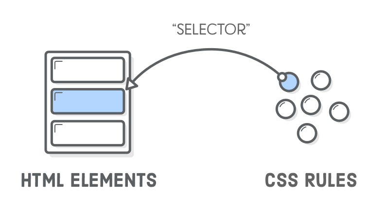

Week 4
Intro to Front End
We're finally at the level where we can make our own webpages! This process is a bit messy and complicated, though, so let's try to understand every step of the way.

If you haven't already, download a text editor of some sort. I recommend Sublime Text 3 since it's pretty popular for web development and for coding in general if you don't have a dedicated IDE.
CSS
Before we get there, though, there's one last component of webpages we haven't spent very much time on: CSS. This is how we make our page look nice.
CSS stands for "Cascading Style Sheets" and is a simple way to apply styles to parts of the webpage. CSS code has two main components: selectors and properties. The selector tells us where we should apply a style and the properties define aspects of the style. Side note: In general, we are going to define style as a set of properties.
/* Applied to all h1 */
h1 {
font-size: 64px;
margin: 30px auto;
}
In this example, the selector is the "h1" before the brackets and the properties are "font-size" and "margin". Note: each property takes specific types of values. A useful resource for this is the the MDN Documentation.
Simply typing your goal into Google will usually give you a demonstration on how to do it.
Selectors
There are three different types of selectors: tags, classes, and ids. We have already talked about HTML tags, which we use to define HTML elements, and ids, which are unique identifiers for HTML elements. We will talk about classes in a later section.
Selectors tell us where to apply a style by matching any HTML that has a selector. For example, the "h1" selector would apply the specified style to all "h1" tags. If you want a more detailed list of selectors, search MDN or check out this list.
Properties
All properties take values. Some take numerical values, and some qualitative. We'll cover a few common types of values.
Types of Values
There are many types of values, but the quantitative ones include: pt (usually used in print media, 1/72 in, fixed size), px (pixels, depends on screen), em (1em is the current font size, e.g. 12pt for the body), and % (percent of the page).
h1 {
font-size: 1em;
margin-top: 1%;
letter-spacing: 2px;
}
Useful Properties
There are a lot of CSS properties that have been defined by various standards, but you'll see a few of them everywhere.
Margin, Padding, Border
These all refer to the CSS box model, which we will talk about in detail next week. In essence, however, they all increase space between elements.
Text and Font Properties
These include:
text-decoration - used for underlining text and some other basic styling.
font-size - used for setting the font size in a specific element.
letter-spacing - specifies spacing behavior between text characters.
There are many more, but experimenting with these will help you understand how these types of properties work in general.
.toc-elem {
text-transform: uppercase;
font-size: 1.4rem;
letter-spacing: .2rem;
font-weight: 600;
margin-bottom: 0.5rem;
}As an example, this is the code for this page's table of contents. Note: We use "rem" instead of "em", because "rem" is relative to the root font size rather than the nearest element font size.
Classes

It's fine to add to specific kinds of elements, but it's even more helpful to decide which elements get a given style. That's where classes come in.
Classes are a way to group a bunch of elements and apply a style.
/* Defines a CSS class called embeddedimg */
.embeddedimg {
float: right;
margin: 30px 30px;
}
And in your HTML:
<img class="embeddedimg" ... >So we can add a given set of styles arbitrarily by adding the class attribute to our HTML.
Modifying with JavaScript
All these styles are useful, but they really get interesting when we can modify them with our JavaScript.
The best way to do that is with the classList attribute:
var para = document.getElementById("toModify");
para.classList.add("testClass");
// Note, this doesn't work in IE-8, so use className in that case.You can add individual styles through Javascript, but it gets messy. Classes are a way to not have to worry about individual styles while writing JavaScript.
If we want to switch back and forth between two states, the toggle function becomes helpful:
//Removes the class if it's there
//And adds it if it's not.
para.classList.toggle("testClass");Make Your Own
Try experimenting as much as possible. I've tried to explain as much as I can in the comments on the page, but this is a lot to take in. The best way to get familiar with building a page is to try it, after all.
Here is a list of common CSS properties that you can try messing with!
Get the starter files that give examples of some things we've already done here.
- Process:
- Create an HTML page with the layout.
- Create a CSS page and link it via the link attribute in the head of the HTML page.
- Create a JS page and link it via the script attribute anywhere in the page. We recommend placing it below the body tag.
Wrap Up
That was a lot, but now you know enough to try making your own pages. The main thing left to get familiar with webpages is practice.